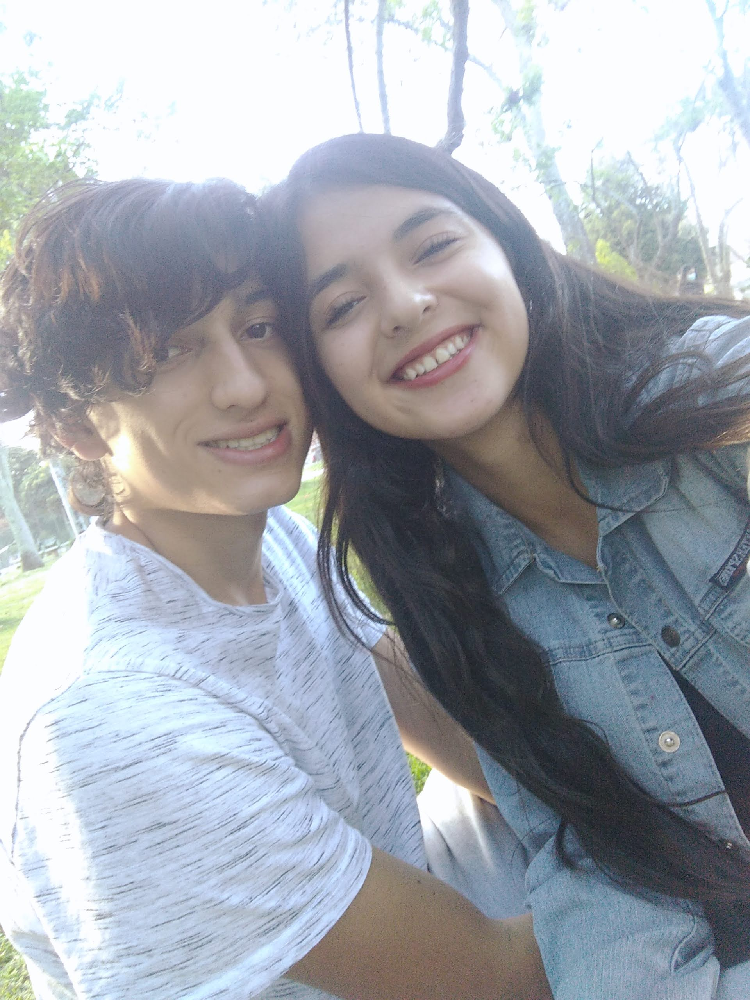
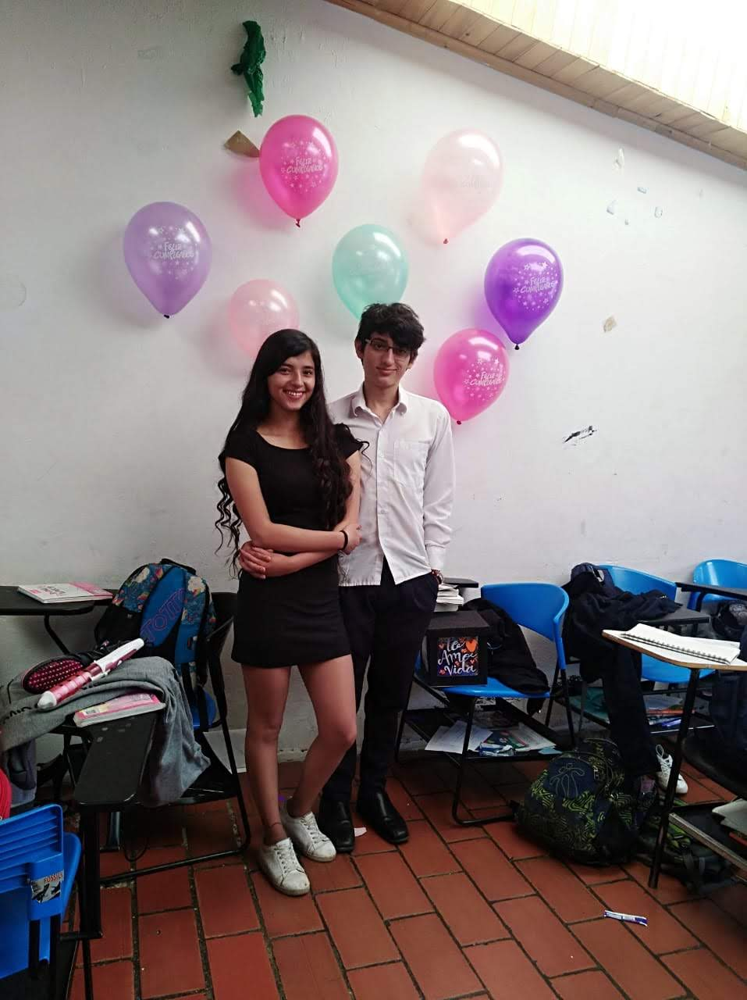
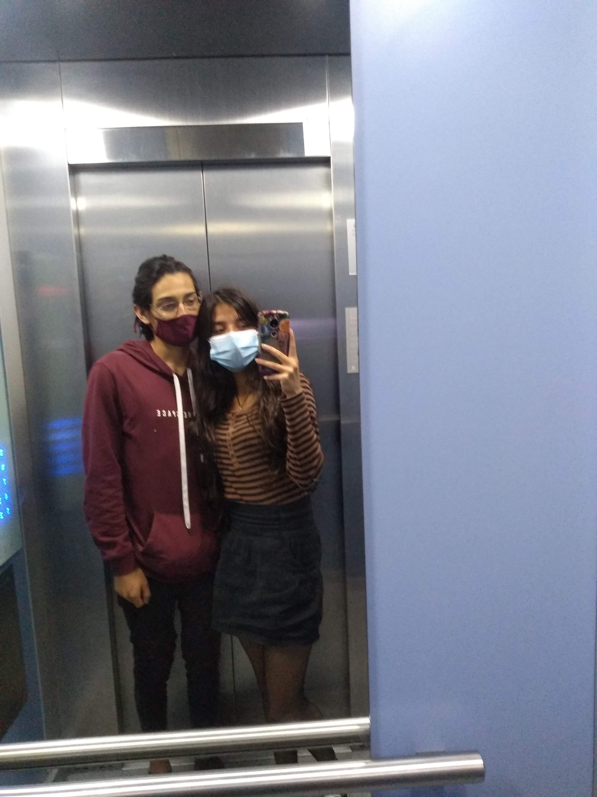
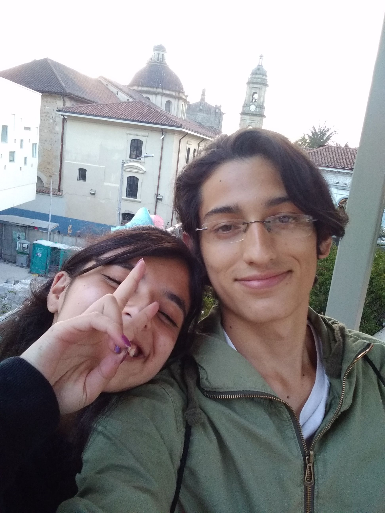

Nuestra historia comenzó haciendo una extraña torre con pasta que nos salió bastante mal, poco a poco crecimos y nos fuimos encariñando el uno con el otro y aunque en cierta parte de la historia tuve miedo a comprometerme contigo desde tan jóvenes, pudimos volver y todo empezó a fluir.
Nuestra Historia

Al principio la relación no comenzó de la mejor manera, pienso que aún era muy inmaduro, pero todo fue mejorando y las dudas se despejaron, realmente empecé a pensar en que no podría existir un mejor futuro que el que no fuera contigo. Nuestras salidas eran el mejor escape a mis problemas y nuestras tardes juntos no pudieron ser más tranquilas. Extraño la época del colegio porque la ilusión de seguir contigo en un futuro no pudo ser más real y bonita.


Los días en los que todo te empezó a salir mal, yo también estaba bastante triste por el hecho de que me iba a ir y alejarme de ti era lo que menos quería. Verte de esa manera es algo que no quiero volver a ver, era frustrante saber que estabas fatal y no poder hacer más por ti que acompañarte llorando, sentía que no podía encontrar las palabras adecuadas para hacerte sentir mejor y siento mucho no haber podido ser un mejor novio, igual quiero que sepas que me esforcé mucho por serlo.
Hoy en día nuestra relación no ha tomado un rumbo definitivo y aunque parece que todo va a acabar, aún tengo la ilusión de que todos tus te amos aún sigan siendo verdaderos y de que tomes la decisión de seguir escribiendo nuestra historia que ha estado llena de todo tipo de aventuras y conflictos que hemos podido resolver juntos. Por mi parte, solo deseo que este capítulo sea uno más de nuestras vidas y que no sea el capítulo final.
